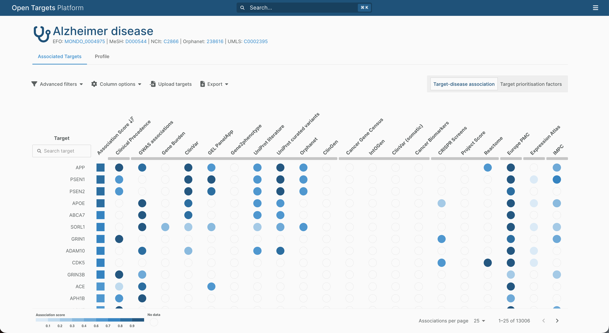
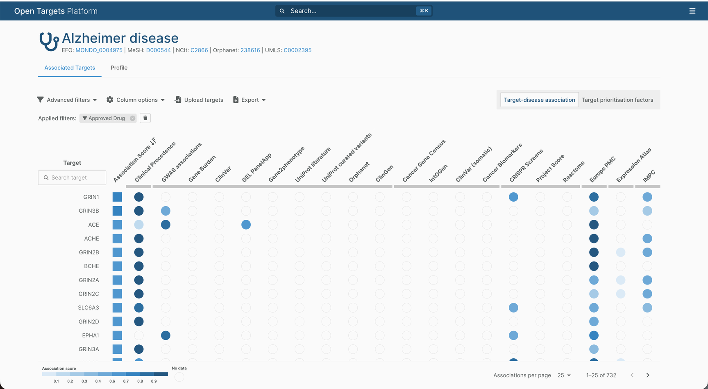
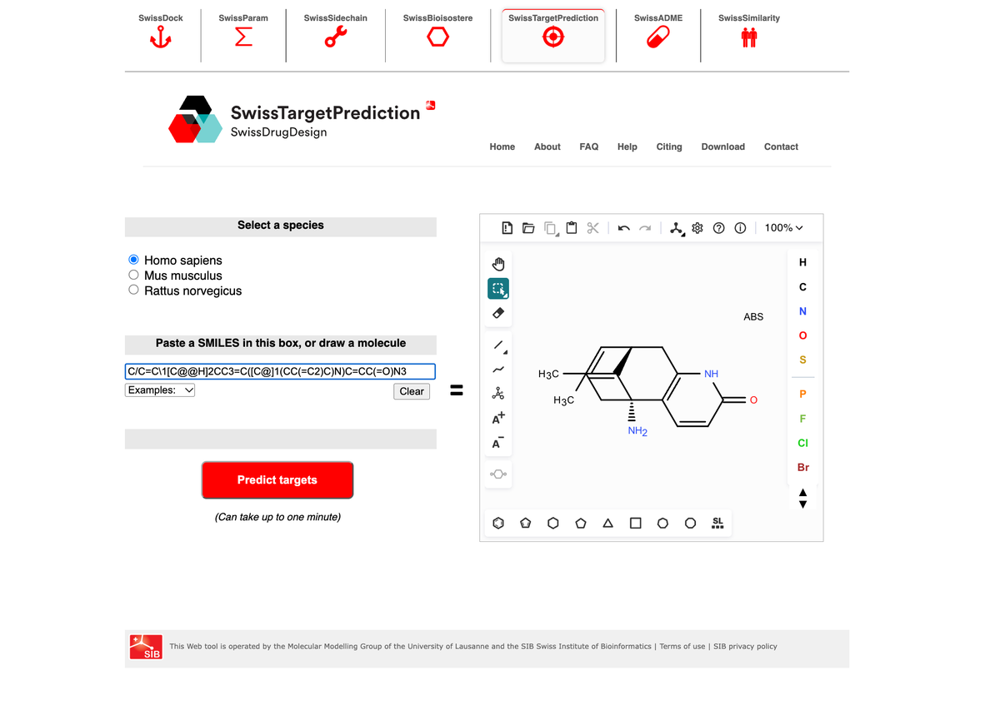
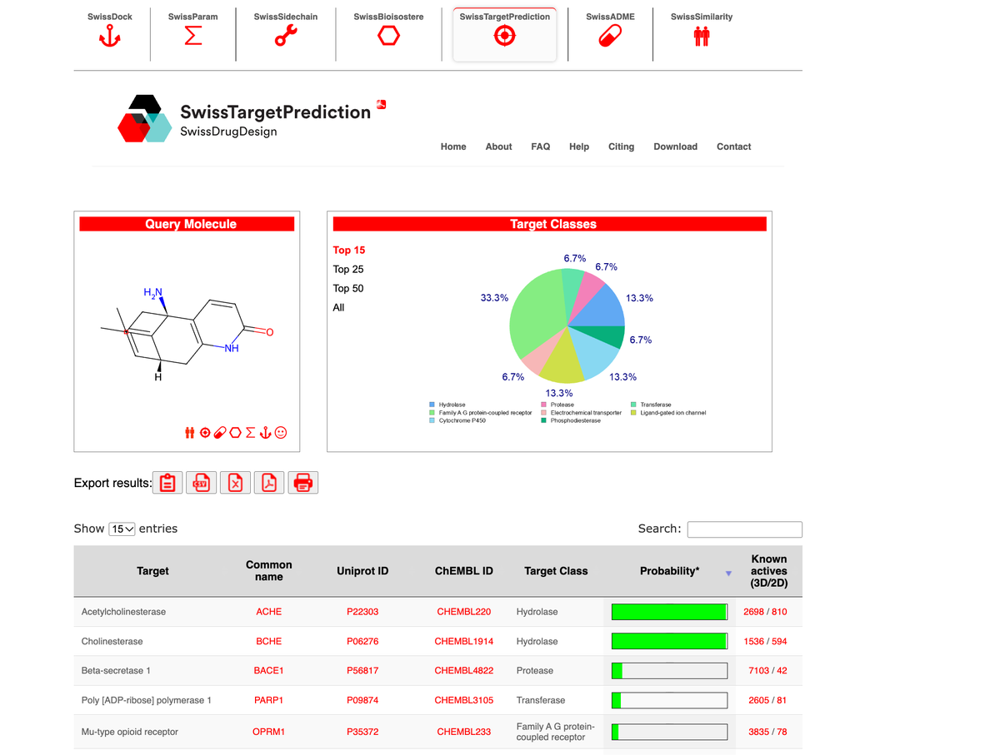
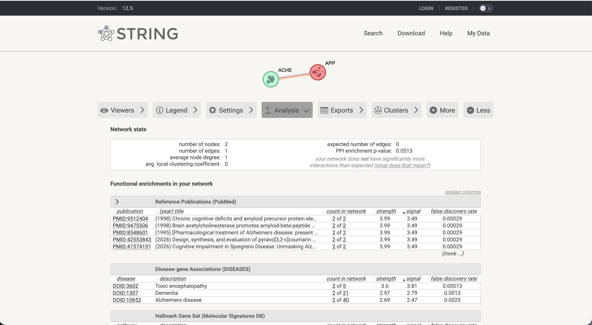
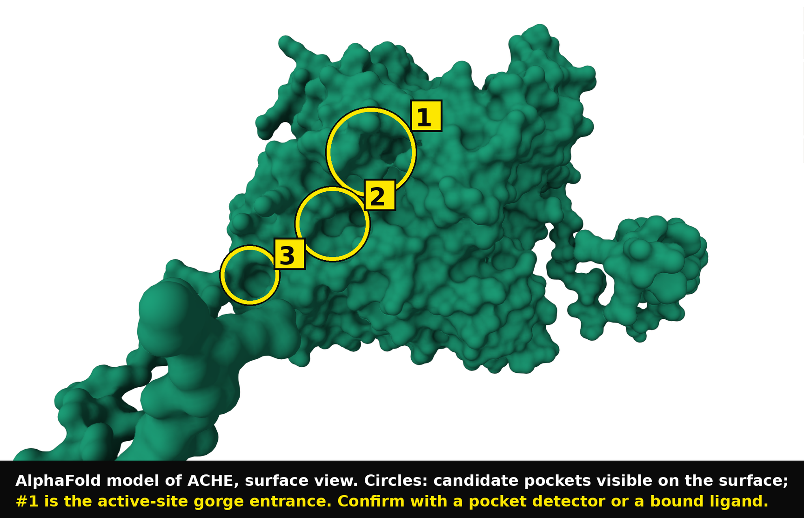

How to use Open Targets, SwissTargetPrediction and AlphaFold to find a druggable target for Alzheimer's.
Five steps, all free, all on a laptop. The example: finding a small-molecule target for Alzheimer's disease.
1Pull disease genes from Open Targets
2Filter for targets with an approved small molecule pill
3Test a natural compound with SwissTargetPrediction
4Check the pathway network
5Confirm the 3D binding pocket with AlphaFold
By Tolu (@toluwanimiso)AiSynth Labs
Read this first
Start with the target
The goal: you want to discover a new drug for Alzheimer's disease. The first step is finding a biological target.
Ask a database for every gene linked to Alzheimer's and it hands back over 13,000 results. The real challenge is filtering that list down to a single protein you can actually drug with a small molecule pill.
Pull the disease genes from Open Targets.
Filter for targets that already have an approved small molecule drug.
Test a natural compound, Huperzine A, with SwissTargetPrediction.
Check the pathway network.
Confirm the physical 3D binding pocket with AlphaFold.
Counts in this guide are from my pull on the day I ran it. Open Targets updates, so your count may differ slightly.
@toluwanimisoTarget guide
Step 1: Open Targets
Pull the disease genes
T
THE TOOL: Open Targets Platformplatform.opentargets.org, free, no account needed for browsing.
A
THE ACTIONSearch "Alzheimer's disease" and open the associated targets list.
R
THE RESULT13,006 genes, ranked by evidence strength. The top-ranked gene is APP (amyloid precursor protein).

Open Targets: Alzheimer's disease searched, 13,006 genes counted, APP at rank 1
The science: why APP is #1, and why it is not a pill target
APP ranks first on research volume: it produces the amyloid that forms plaques. But APP is a massive, flexible protein with no clear pocket for a small molecule, and shutting it off completely is not safe. The drugs that go after its amyloid, such as lecanemab, are large antibodies given by IV infusion that cross the blood-brain barrier poorly. For a pill, APP is not the best target.
@toluwanimisoTarget guide
Step 2: The filter
Demand that a pill exists
T
THE TOOL: Open Targets advanced filtersSame platform, filter panel on the targets list.
A
THE ACTIONSelect tractability "small molecule" and "approved drug". If you want a pill, only keep targets a pill already exists for.
R
THE RESULTThe list drops from 13,006 to 732. APP disappears. ACHE (acetylcholinesterase) survives, because the approved pill donepezil targets it.

The filter selected, and the new list: 732 genes, ACHE among them
The science: choose the target by the drug you want to build
This filter proves APP has no approved small molecule drug, and that ACHE is druggable in practice: a pill already exists for it. Filter before you fall in love with a target.
@toluwanimisoTarget guide
Step 3: SwissTargetPrediction
Test a compound
T
THE TOOL: SwissTargetPredictionswisstargetprediction.ch, free.
A
THE ACTIONTake Huperzine A, a natural compound from Chinese club moss (Huperzia serrata), traditionally used for memory. Paste its SMILES or draw the structure.
R
THE RESULTThe tool predicts Huperzine A binds strongly to ACHE, with a probability score.

Huperzine A in the predictor

ACHE as a top predicted target
The science: rationale plus a hit
You now have both halves: a reason to pick the compound (traditional use for memory) and a tool confirming it hits a protein (ACHE) that sits on your filtered list of pill-druggable targets.
@toluwanimisoTarget guide
Step 4: The pathway
Check the network
T
THE TOOL: STRING DBstring-db.org, free.
A
THE ACTIONBuild a network of ACHE and APP and see whether they connect.
R
THE RESULTACHE connects to APP. They share a biological pathway.

The network: the ACHE node connected to the APP node
The science: a hypothesis, not a proof
This connection means hitting ACHE may indirectly affect the amyloid pathway driven by APP, without drugging APP directly. Treat it as a biological hypothesis to test in the lab, not as evidence the compound works.
@toluwanimisoTarget guide
Step 5: AlphaFold
Find the physical pocket
T
THE TOOL: AlphaFold Database or PDBalphafold.ebi.ac.uk or rcsb.org, free.
A
THE ACTIONPull the 3D structure of ACHE and look for a binding pocket.
R
THE RESULTACHE has a clear, physical pocket that a small molecule like Huperzine A can fit into.

AlphaFold model of ACHE, surface view: candidate pockets circled, #1 is the active-site gorge
The science: a network edge is not a binding site
A pathway connection only says the proteins are related. The 3D pocket is the physical check that a drug can actually fit and bind. Both checks together make ACHE a rational target.
@toluwanimisoTarget guide
Conclusion
The target: ACHE
Your final target is acetylcholinesterase (ACHE). Why:
1It is on the filtered list: an approved small molecule target
2Your compound, Huperzine A, is predicted to hit it
3It connects to the main Alzheimer's pathway, APP
4It has a physical 3D pocket the drug can bind
The limit, said plainly
This workflow gives you a shortlist. It does not prove Huperzine A treats Alzheimer's. What it does prove: ACHE is a rational, evidence-backed target for a small molecule. The next step is turning the molecule into computer code (SMILES) so it can be tested further.